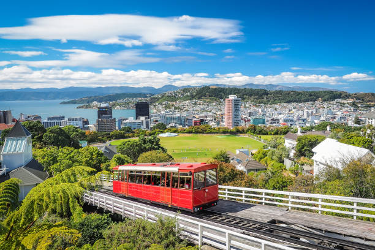
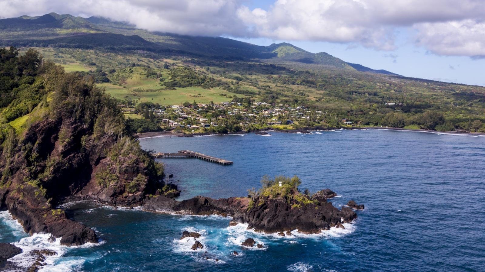
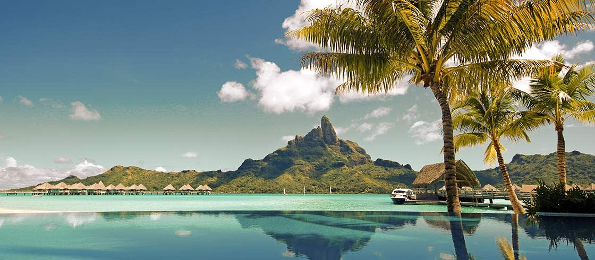

-

New Zealand
#1 in World's best places to visits
New Zealand's South Island brims with majestic landscapes at every turn, from dramatic mountains to spectacular fjords. Here, you can admire the mountains of Fiordland National Park, a UNESCO World Heritage Site, from hiking trails or a boat on Milford Sound. At night, journey to the University of Canterbury's Mount John Observatory to gaze at the starry skies. You can also indulge your inner daredevil in Queenstown (a favorite destination among bungee jumpers), sample delicious sauvignon blanc wine in the Marlborough region or explore New Zealand's most accessible glaciers – Franz Josef and Fox Glacier – on the island's west coast.
-

Paris
#2 in World's best places to visits
The magnetic City of Light draws visitors from around the globe who come to see iconic attractions like the Eiffel Tower, the Louvre and the Arc de Triomphe. But what travelers really fall in love with are the city's quaint cafes, vibrant markets, trendy shopping districts and unmistakable je ne sais quoi. Get lost wandering along the charming cobblestone streets, or grab a croissant and relax on the banks of the Seine for hours. If you're up for a quick daytrip, head about 15 miles southwest of the city center to the Palace of Versailles, which offers guided and self-guided tours of the estate.
-

New Zealand
#3 in World's best places to visits
Whether you're driving along the Road to Hana, enjoying a bird's-eye view of Maui's lush coastline from a helicopter, snorkeling with sea turtles or simply relaxing on white or black sand beaches, you'll find that this Hawaiian island is unlike any other tropical destination. Don't miss a chance to visit Haleakala National Park, which is home to one of the world's largest dormant volcanic craters. You should also attend a luau for a dose of local culture and a taste of Hawaiian specialties like poi, poke and mahimahi.
-

Bora Bora
#4 in World's best places to visits
What this small French Polynesian island may lack in size it makes up for in sheer tropical beauty. Here, you'll find picturesque beaches, lush jungles and luxurious resorts. The island's extinct volcano, Mount Otemanu, makes for a great photo-op or challenging hike, and the friendly Bora Bora locals can help you catch a glimpse of the island's best sights during an off-road excursion. To relax, head to Matira Beach for crystal-clear water and soft white sand. Although a trip to Bora Bora is very expensive, most travelers say it's worth every penny.
-

Tahiti
#5 in World's best places to visits
Travel to this island – the largest in French Polynesia – if you've been dreaming of a vacation spent lazing in a lavish overwater bungalow. Beyond the posh resorts, Tahiti boasts black sand and golden beaches, a bustling capital and prime snorkeling and surfing conditions. If you're looking for more cultural experiences, check out some of the island's ancient temples or shop at its traditional indoor markets. To save money, opt to stay in a vacation rental – the island is home to plenty of cute bungalows and chic condos.